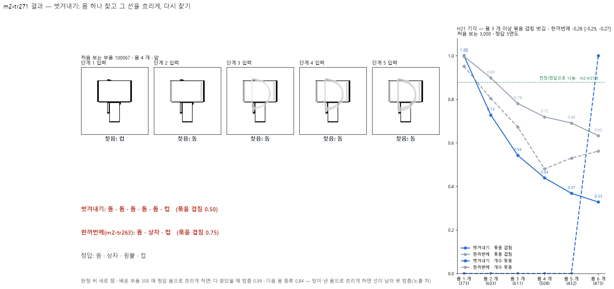

실험 m2_tr0271_h021_벗김
목표 G1.2 view 모음 → 파츠별 CAD code(CadQuery · 그 전 「3 면도 → 파츠별 CAD」 · 지금 M2 는 위 · 앞 · 옆 고정 세 장만 받음 → 아무 각도 N 장으로 바꿀 것 · 11-20) · G1 첫 제품 — 피규어 · 메카 사진 여러 장 + 치수 → 숨은선 3 면도 + 파츠별 CAD · G0 임의의 이미지 → CAD 코드 · 빌린 가정 3: 생성기기하 · 정답3D · 정사영 · 갚는 계획: 나누는 방법 셋 비교의 첫째(벗겨내기) · 깨끗한 정답 3면도 · 생성기 부품 — 고른 방법은 view 입력 · m1 view · 원화CAD짝 시험지로 다시 봄 · 목표 시험지 값: 안 잼 (!)
m2 가 한 번에 몸 하나만 찾고, 찾은 몸의 선을 그림에서 흐리게 한 뒤 다시 찾게(벗겨내기) 하면, 처음 보는 부품에서 몸 셋 이상을 더 잘 나누나?
판정 · H21 기각(-0.28 · 벗김이 한꺼번에보다 나쁨) — 벗겨내기는 시험 때 망이 낸 몸으로 흐리게 하면 선이 어긋나 남아 멈추지 못함(몸을 늘 6 개) · 판정 뒤 새로 잼: 정답 몸으로 흐리게 하면 멈춤 0.99 — 벗기기는 배웠고 무너진 곳은 노출 차 · 다음: 노출 차를 막는 길(망이 낸 몸으로 흐린 캔버스로도 학습 · 흐리게 하는 자리를 넓힘) 또는 정답 캔버스로 처음 보는 부품을 재 벗김이 넓히는지부터
| 가설 | 주장 | 결과 | 근거 |
|---|---|---|---|
| H21 | 한 번에 몸 하나만 찾고 찾은 선을 지워 가면, 단계마다 풀 문제가 「가장 큰 남은 몸 하나」 로 몸 수와 무관해져 처음 보는 부품에서도 더 잘 나눈다 | 기각 | 몸 1 ~ 6 개 묶음 겹침 벗김 1.00 · 0.73 · 0.54 · 0.44 · 0.37 · 0.33 대 한꺼번에 1.00 · 0.90 · 0.78 · 0.72 · 0.69 · 0.63 · 개수 맞음 벗김 0 · 0 · 0 · 0 · 0 · 1.00(거의 모든 부품에서 6 단계 끝까지 몸을 냄 · 2 단계 3,000 · 6 단계 2,995) · 배운 부품 300 묶음 겹침 벗김 0.58 대 한꺼번에 0.99 · 끝 학습 손실 3.62(60 바퀴 · 아직 내려감) · 판정 뒤 새로 잼(판정 아님): 배운 부품 300 에 정답 몸으로 흐리게 한 입력이면 다 찾았을 때 멈춤 0.99 · 몸 남았을 때 계속 0.99 · 다음 몸 종류 0.84 |
분석
한 줄로
물음: m2 가 한 번에 몸 하나만 찾고, 찾은 몸의 선을 그림에서 흐리게 한 뒤 다시 찾게 하면, 처음 보는 부품에서 몸 셋 이상을 더 잘 나누나?
답: 아니다(H21 기각). 몸 3 개 이상 부품의 종류 묶음 겹침이 한꺼번에보다 0.28 낮다. 거의 모든 부품에서 몸을 6 개씩 내며 멈추지 못했다. 정답 몸으로 흐리게 한 입력이면 멈춤을 0.99 로 맞혀, 벗기는 일은 배웠다. 무너진 곳은 시험 때 망이 낸 몸으로 흐리게 하면서 생기는 어긋남(노출 차)이다.
왜 이 실험을 했나
m2-tr270 에서 정답대로 나눠 주기만 하면 같은 m2 가 처음 보는 부품의 몸 종류를 0.43 → 0.88 로 맞혔다. 병목이 나누기라, 나누는 방법을 시험했다. 조사(claudedocs/research_몸나누기_20261121.md)에서 학습보다 많은 몸으로 넓힌 근거가 가장 직접적인 「벗겨내기」 부터 했다. 마스크 질의 · 선 묶기는 「날 화소 → 망」 규칙 답을 기다린다.
바꾼 것 하나
m2 가 내는 방식. 몸 목록을 한꺼번에 내는 대신, 단계마다 가장 큰 남은 몸 하나를 내고 없으면 멈춘다. 찾은 몸을 혼자 그려, 그 선과 겹친 그림 선은 흐리게(90), 그림에 없는 곳은 더 흐리게(40) 넣는다. 학습 땐 찾은 몸 = 정답 몸 그림, 시험 땐 망이 낸 몸을 지어 그린다. 망 꼴 · 부품 11,968 · 60 바퀴 · 걸음 수는 m2-tr263 「3면도 보이는 선만」 과 같다. 학습 렌더 부품 선이 m2 3면도와 화소 1.0 같고, 정답 칸을 지어 그린 몸이 부품 틀 몸 선과 1 화소 안 1.0 임을 먼저 확인했다.
결과

| 처음 보는 3,000 | 몸 1 | 2 | 3 | 4 | 5 | 6 |
|---|---|---|---|---|---|---|
| 묶음 겹침 · 벗김 | 1.00 | 0.73 | 0.54 | 0.44 | 0.37 | 0.33 |
| 묶음 겹침 · 한꺼번에 | 1.00 | 0.90 | 0.78 | 0.72 | 0.69 | 0.63 |
| 개수 맞음 · 벗김 | 0 | 0 | 0 | 0 | 0 | 1.00 |
| 가설 | 결과 | 판정선 | 판정 |
|---|---|---|---|
| H21 벗김 - 한꺼번에(몸 3 개 이상 묶음 겹침) | -0.28 [-0.29, -0.27] | ≥ 0.08 지지 · 위 < 0.03 기각 | 기각 |
종류 묶음 겹침 = 정답 몸 종류마다 예측에 들어 있는 수 / 정답 몸 수(순서 · 자리 없이). 넘치게 낸 몸은 깎지 않는다.
왜 이렇게 나왔나
확인한 것
- 멈추지 못한다. 2 단계에 3,000 부품 모두, 6 단계에도 2,995 부품이 몸을 더 냈다. 배운 부품 300 도 같아서(묶음 겹침 0.58 · 한꺼번에 0.99), 처음 보는 부품만의 문제가 아니다.
- 판정 뒤 새로 잼(판정 아님): 배운 부품 300 에 정답 몸으로 흐리게 한 입력을 넣으면, 다 찾았을 때 멈춤 0.99 · 몸이 남았을 때 계속 0.99 · 다음 몸 종류 0.84 다. 벗기기 자체는 배웠다.
- 그림의 부품에서 돔을 찾고 그렸는데 그림의 돔 선과 어긋나 진한 선이 남고, 망은 그 선에서 돔을 또 찾는다.
짐작 (아직 확인 안 함)
- 학습 때는 늘 완벽한 캔버스만 봐서, 조금 어긋난 캔버스를 처음 본다. 망이 낸 몸으로 흐린 캔버스로도 배우거나, 흐리게 하는 자리를 넓히면 멈출 수 있을 것이다.
한계
- 한 번 · 60 바퀴(학습 손실이 아직 내려감) · 정답 3면도 · 생성기 부품.
- 미리 정한 묶음 겹침은 넘친 몸을 깎지 않아 벗김에 유리했는데도 졌다. 이 셈의 약점은 다음 판정에서 고친다(개수 · 자리 짝을 같이 봄).
- 다음 몸 종류 0.84 는 배운 부품 · 정답 캔버스 값이다. 처음 보는 부품에서 정답 캔버스로 재지 않았다.
배운 것과 다음
벗겨내기는 벗기는 일은 배웠지만, 스스로 낸 몸으로 흐리게 하면 어긋나 멈추지 못한다(노출 차).
- 먼저 처음 보는 부품에 정답 캔버스를 넣어 잰다. 노출 차를 고치면 벗김이 처음 보는 부품까지 넓히는지 싼 값으로 본다.
- 넓힌다면 노출 차를 막는 학습(망이 낸 몸으로 흐린 캔버스도 섞음)으로 다시.
- 마스크 질의 · 선 묶기는 규칙 답을 받은 뒤 같은 조건에서 견준다.
실험 기록
- 카드(식 · 판정식 · 사례 그림 · Lean 증명 나무 하네스/lean/증명나무_tr0271.H21.png) · 벗김271.py(그리기 · 검사 · 흐름 · 학습 · 추론 · 재기 · 정답캔버스 · 그림) · 잼.json · 흐름.png · 결과.png · 원본 out/설명/캐드부품/모델271(몸틀.npz · 망/머리_020 · 040 · 060 · 곡선 · 추론_시험 · 추론_학습)
- 렌더 사고: 처음 Pool(maxtasksperchild)이 일꾼 교체 뒤 멈춤 · 일꾼 8 은 12 GB 상한에 걸려 실패 — 모델179.병렬 · 일꾼 4 로 다시(실패 0). 렌더 · 추론이 WSL 메모리(16 ~ 19 GB)로 두 번 강제 종료 · 사용자가 WSL 을 끈 뒤 끝냄.